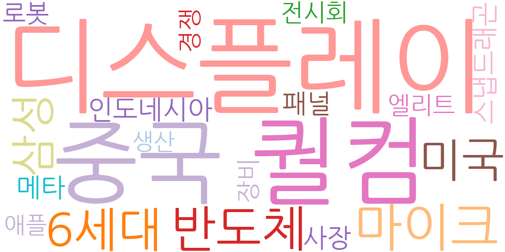
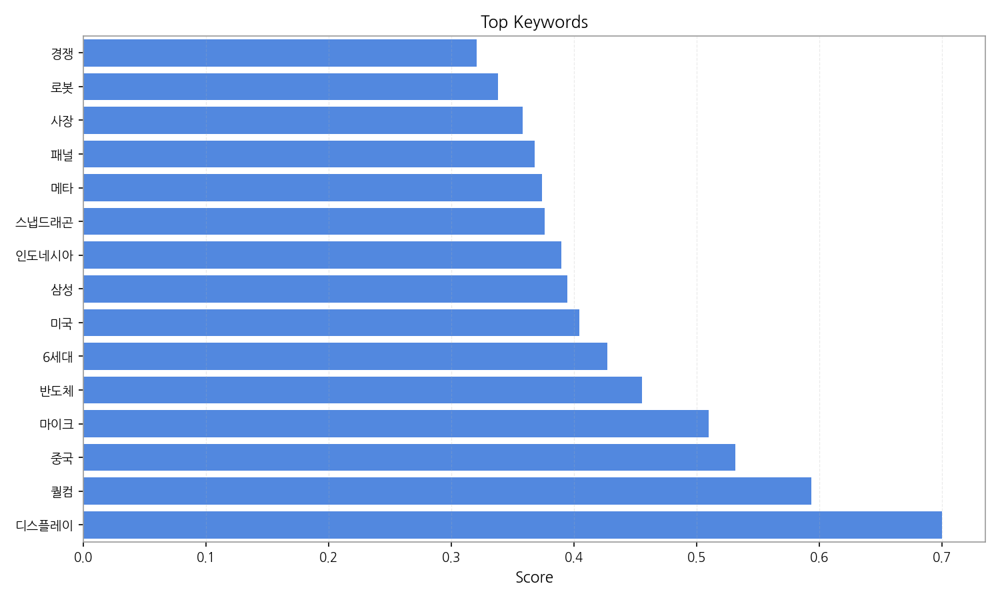
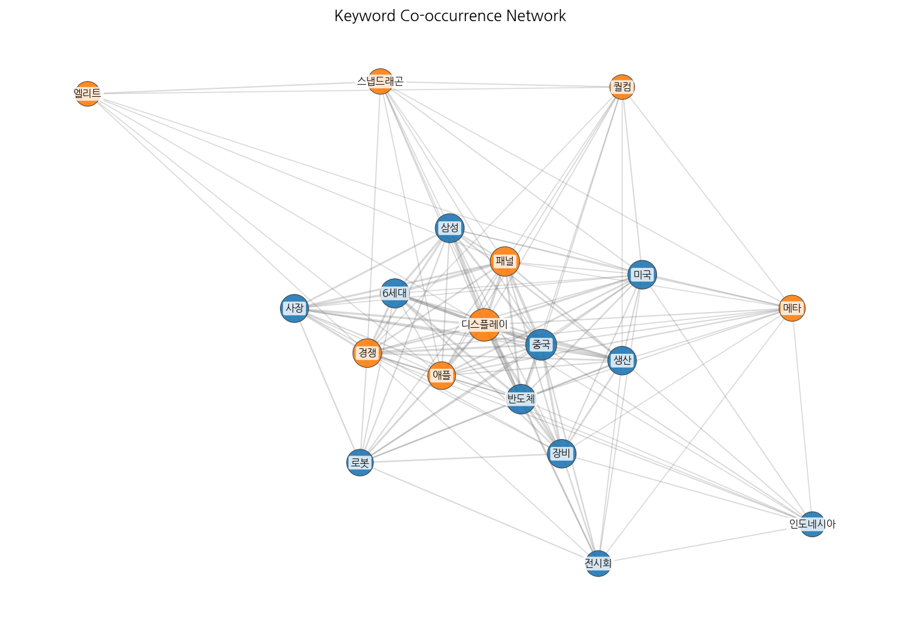
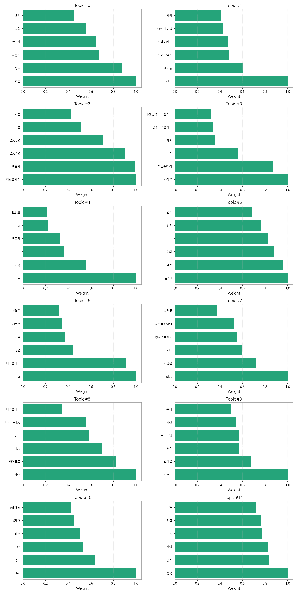
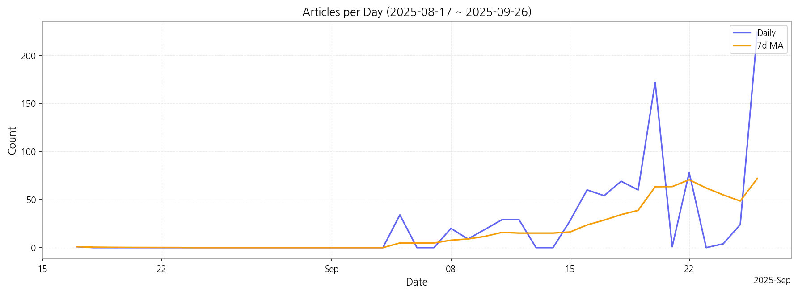

1. 핵심 맥락:
2. 최근 변화/스파이크:
3. 실무 인사이트:

| Rank | Keyword | Score |
|---|---|---|
| 1 | 디스플레이 | 0.700 |
| 2 | 퀄컴 | 0.593 |
| 3 | 중국 | 0.532 |
| 4 | 마이크 | 0.510 |
| 5 | 반도체 | 0.455 |
| 6 | 6세대 | 0.427 |
| 7 | 미국 | 0.404 |
| 8 | 삼성 | 0.394 |
| 9 | 인도네시아 | 0.390 |
| 10 | 스냅드래곤 | 0.376 |
| 11 | 메타 | 0.374 |
| 12 | 패널 | 0.368 |
| 13 | 사장 | 0.358 |
| 14 | 로봇 | 0.338 |
| 15 | 경쟁 | 0.320 |




1. 핵심 맥락:
2. 최근 변화/스파이크:
3. 실무 인사이트:
| Idea | Target | Value Prop | Score |
|---|---|---|---|
| 차량용 AR HUD (Augmented Reality Head-Up Display) 솔루션 | 글로벌 완성차 OEM (Tier 1 공급사 포함) | AI 기반의 실시간 도로 정보 분석 및 3D AR 그래픽 렌더링 기술을 통해 운전자에게 직관적이고 안전한 운전 경험을 제공합니다. 기존 HUD 대비 넓은 시야각과 다양한 정보 표시, 사용자 맞춤형 인터페이스를 제공하여 차별화된 가치를 창출합니다. | 4.20 |
| AI 기반 디스플레이 공정 자동화 및 수율 개선 솔루션 | 디스플레이 패널 제조사 | AI 기반의 실시간 공정 데이터 분석 및 예측 모델링을 통해 디스플레이 제조 공정의 효율성을 극대화하고 수율을 획기적으로 개선합니다. 불량 예측, 설비 이상 감지, 공정 파라미터 최적화 기능을 통해 생산 비용을 절감하고 제품 품질을 향상시킵니다. | 4.00 |
| 메타버스 협업용 초고해상도 마이크로 OLED XR 디스플레이 | 북미 빅테크 기업 (Meta, Apple, Microsoft) | 초고해상도 마이크로 OLED 기술을 통해 현실과 구분이 어려운 몰입형 XR 경험을 제공합니다. 넓은 색 영역, 높은 명암비, 빠른 응답 속도를 통해 장시간 사용에도 눈의 피로를 최소화하고, 몰입감 있는 협업 환경을 구축합니다. | 3.90 |
| IT 기기용 벤더블 OLED 패널 솔루션 | 글로벌 IT 기기 제조사 (Samsung, LG, Lenovo) | 자유로운 형태 변환이 가능한 벤더블 OLED 패널을 통해 휴대성과 사용성을 극대화한 새로운 IT 기기 디자인을 가능하게 합니다. 뛰어난 내구성, 얇은 두께, 가벼운 무게를 통해 사용자에게 혁신적인 모바일 경험을 제공합니다. | 3.70 |
| 퀀텀닷 컬러 필터 기반 MicroLED 디스플레이용 신소재 | MicroLED 디스플레이 제조사 | 높은 색 순도와 광 변환 효율을 가진 퀀텀닷 컬러 필터를 통해 MicroLED 디스플레이의 색 재현율과 휘도를 획기적으로 향상시킵니다. 기존 염료 기반 컬러 필터 대비 뛰어난 내구성과 안정성을 제공하며, 친환경적인 소재를 사용하여 지속 가능한 디스플레이 솔루션을 제공합니다. | 3.50 |